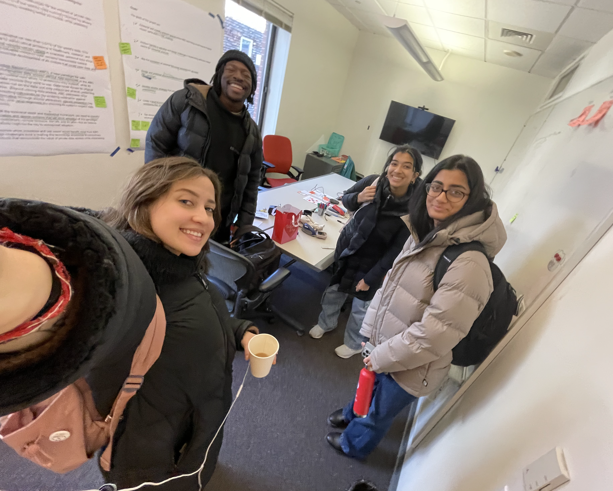

OpenMined
MHCI Capstone
Exploring C2C use cases for privacy-preserving AI through ethics-first human-centered design.
Context
Privacy-preserving machine learning is technically promising but difficult for non-specialists to adopt. This capstone is focusing on translating complex privacy concepts into real product use cases that the OpenMined team can evaluate and build.
Challenge
- Bridge the language gap between technical privacy methods and product decisions.
- Identify use cases where trust and compliance are as important as model accuracy.
- Design concepts that feel usable, transparent, and ethically defensible.
A recurring issue is that privacy is usually communicated as a legal checkbox, not a user experience. The project aims to reframe privacy as a product quality: legible controls, clear data boundaries, and predictable behavior under high-stakes conditions.

Research Methodology
Our research framework combines quantitative and qualitative methods to understand the privacy-preserving AI landscape:
Design Process: Two-Week Sprints
Our approach is structured around iterative two-week design sprints, managed collaboratively in Notion. Each sprint is focused on a specific use case cluster, moving from research synthesis to concept validation:
- Week 1 - Discovery & Synthesis: Deep-dive research sessions, synthesis workshops, and preliminary concept ideation.
- Week 2 - Prototyping & Validation: UX flow development, low-fidelity prototypes, and stakeholder feedback sessions.
- Notion as Central Hub: All research artifacts, design decisions, feedback loops, and iteration history tracked in shared Notion workspace for full team alignment.
This rhythm enables rapid exploration while maintaining rigor in documentation. We could test ideas quickly, learn from OpenMined team feedback, and pivot informed by evidence rather than assumption.

Approach & Solution
- Mapping high-risk domains where data sensitivity and trust are mission-critical.
- Evaluating candidate scenarios across desirability, feasibility, and ethical risk.
- Drafting UX concept flows showing how privacy guarantees are made understandable in-product.
Instead of treating privacy as invisible infrastructure, our solution will make protection and control visible where it matters most.
Research Readout
Our deliverable captures the first phase of research synthesis, use case prioritization framework, and initial concept directions validated with OpenMined stakeholders.
Outcomes
- Produce C2C use cases of privacy-preserving AI.
- Align technical possibilities with user-facing product opportunities.
- Strengthen my ability to design at the intersection of AI ethics, technology, and usability.
More to come on this project.